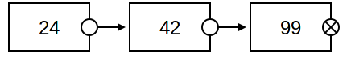
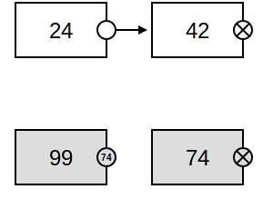
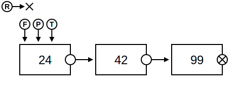
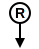
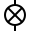
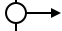
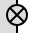
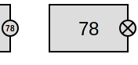
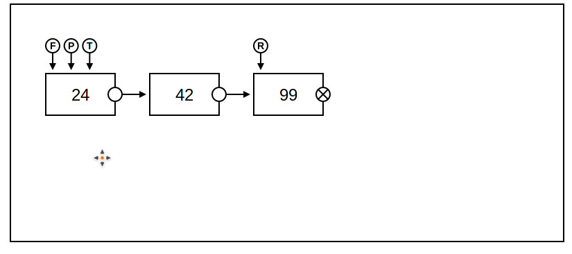

Developed by: Caleb Evans and Kyle Gullicksen
Advisor: Rika Yoshii
Copyright 2016
It’s basically a sandbox for seeing what happens to a linked list by changing some of the pointers in that list, one pointer at a time. By change, I mean two things:
What do these even mean?
By reachable nodes, we mean all of the nodes that can be ‘reached’ by first begining at the Front node, and then successively following all of the next pointers until you reach a next pointer whose value is NULL. The unreachable nodes are simply all of the remaining nodes; i.e., those nodes which are not reachable.
What do reachable nodes look in the webapp?

What about unreachable nodes?

The gray nodes (with values 99 and 74) are examples of unreachable nodes, in contrast to the reachable nodes 24 and 42.
Pointers
There are basically three different types of pointers in the webapp:
Examples
Position Pointers (reminder: position pointers = Front, Rear, T, and P)
The position pointers can appear in two basic flavors in the webapp, depending upon if the pointer in question is NULL or not.
NULL position pointer
For example, here’s how the Rear pointer appears when set to NULL:

Non-NULL position pointer
To illustrate the general principle, here’s how the Rear pointer appears when pointing at a reachable node:

Next pointers of reachable nodes
NULL
If the next pointer for a reachable node is NULL, then you’ll see this on the right side of the node’s box:

Not NULL
If the next pointer for a reachable node is not NULL, then you’ll see this on the right side of the node’s box:

Next pointers for unreachable nodes
NULL
Looks like the below:

Not NULL
This is a little different from the reachable next case. Namely, there is no longer a line connecting the source pointer (next) to the destination node. Instead, you’ll see the elem value of the node being pointed at inside the source pointer circle. This is because we do not want many arrows all over the page. PLEASE do not think that actual pointers in C++ are elem values. Pointers are addresses!!!

Some notes concerning the four position pointers:
Assignment
Deletion
Undo
Pan
